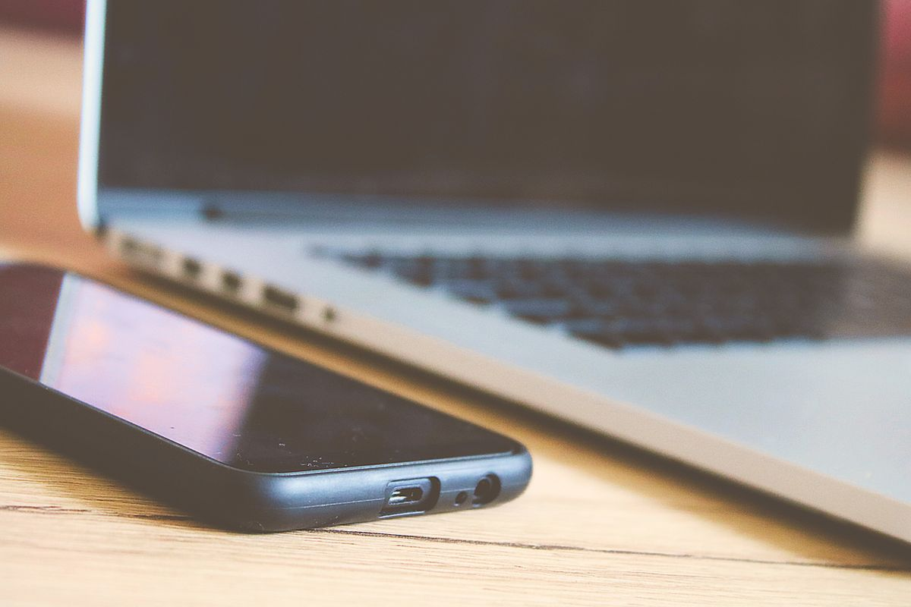
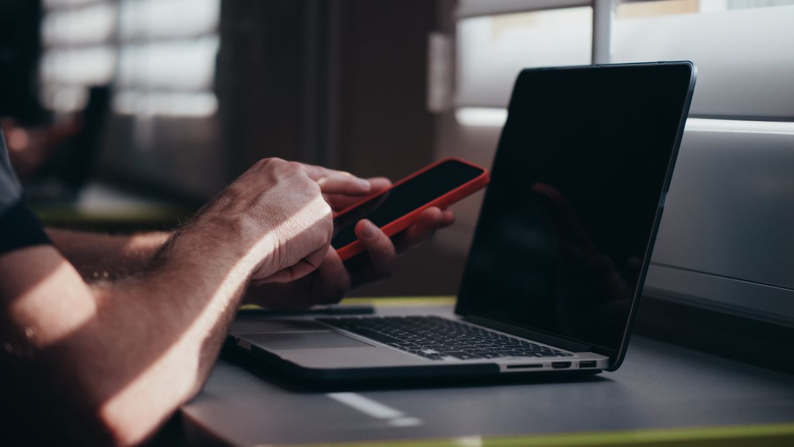

Foto dan video di HP bisa pindah ke laptop tanpa kabel lewat Quick Share, LocalSend, Google Drive, atau WhatsApp Web. Keempatnya gratis, dan yang paling cepat untuk HP Android adalah Quick Share karena file langsung melompat lewat WiFi tanpa diunggah ke internet dulu. Per November 2026, begini cara memilihnya.
Kalau HP kamu Android dan laptopnya Windows, pakai Quick Share. Pasang aplikasi Quick Share for Windows sekali di laptop, nyalakan WiFi dan Bluetooth di kedua perangkat, lalu dari HP pilih foto atau dokumen, ketuk Bagikan, pilih Quick Share, dan ketuk nama laptop kamu. File masuk ke folder Unduhan, di dalam folder Quick Share. Kalau tidak ada WiFi atau internet di sekitarmu, pakai LocalSend. Pasang aplikasinya di HP dan laptop, sambungkan keduanya ke jaringan lokal yang sama, lalu kirim langsung tanpa akun dan tanpa server perantara. Kalau file harus bisa dibuka dari mana saja dan tidak harus hari ini juga, unggah ke Google Drive dari HP, lalu unduh dari laptop dengan akun Google yang sama. Akun Google gratis memberi 15 GB ruang yang dipakai bersama Drive, Gmail, dan Google Foto. Kalau tidak mau memasang apa-apa, kirim file ke chat diri sendiri di WhatsApp Web lewat opsi Dokumen, lalu unduh dari laptop. Batasnya 2 GB per file, dan pilih Dokumen supaya foto dan video tidak dikompres.
Cara mana yang paling cocok buat kamu?
Pilih satu berdasarkan situasi kamu. File besar dan kedua perangkat berdekatan, pakai Quick Share atau LocalSend. File harus tersimpan rapi dan bisa dibuka dari mana saja, pakai Google Drive. Tidak ada WiFi sama sekali, pakai LocalSend atau Bluetooth. Tidak mau memasang aplikasi, pakai WhatsApp Web. Bluetooth kami taruh paling akhir karena kecepatannya paling lambat, cocok untuk satu dua dokumen kecil saja.
Bagaimana cara kirim file pakai Quick Share?
Quick Share adalah jawaban Google untuk AirDrop. Dulu namanya Nearby Share, lalu Google menggabungkannya dengan Quick Share milik Samsung. Di HP Android, fiturnya sudah ada bawaan sejak Android 6, jadi tidak ada yang perlu dipasang di sisi HP. Di laptop, kamu perlu memasang aplikasi Quick Share for Windows sekali saja. Aplikasi ini berjalan di Windows 10 64 bit ke atas, dan di laptop ARM butuh Windows 11. Kalau laptop kamu laptop Samsung, pakai aplikasi Quick Share Samsung dari Microsoft Store, bukan aplikasi Google.
Langkahnya:
- Unduh dan pasang Quick Share for Windows dari situs Android Google, lalu buka aplikasinya.
- Masuk dengan akun Google kamu, lalu atur nama laptop dan siapa yang boleh mengirim file ke kamu. Pilih Perangkat saya supaya hanya perangkat kamu sendiri yang bisa mengirim.
- Nyalakan WiFi dan Bluetooth di HP dan laptop, lalu dekatkan keduanya, kira-kira dalam jarak lima meter.
- Di HP, buka foto, video, atau dokumen yang mau dikirim, ketuk Bagikan, lalu pilih Quick Share.
- Ketuk nama laptop kamu di daftar perangkat terdekat. Kalau kedua perangkat masuk akun Google yang sama, file langsung terkirim tanpa perlu kamu setujui di laptop. Kalau tidak, klik Terima di notifikasi laptop.
- File tersimpan di folder Unduhan, di dalam folder Quick Share.
Kalau laptop tidak muncul di daftar, cek tiga hal: aplikasi Quick Share di laptop sudah terbuka, profil jaringan Windows sudah diatur ke Privat, dan Bluetooth di kedua perangkat menyala. Quick Share memakai Bluetooth untuk menemukan perangkat dan WiFi untuk mengirim filenya.

Bagaimana cara kirim file pakai LocalSend kalau tidak ada internet?
LocalSend adalah aplikasi gratis dan open source untuk mengirim file antar perangkat yang berada di jaringan lokal yang sama. Tidak ada akun, tidak ada server perantara, dan tidak butuh internet. File berjalan langsung dari HP ke laptop lewat WiFi rumah atau kantor, dan transfernya terenkripsi. Cocok untuk kamu yang sedang di tempat tanpa internet, atau yang tidak mau filenya mampir ke server mana pun.
Langkahnya:
- Pasang LocalSend di HP dari Play Store dan di laptop dari localsend.org. Aplikasinya tersedia untuk Windows, macOS, Linux, Android, dan iPhone.
- Sambungkan HP dan laptop ke WiFi yang sama. Tidak harus ada internet, yang penting keduanya berada di satu jaringan lokal.
- Buka LocalSend di kedua perangkat. Nama perangkat akan muncul otomatis di daftar perangkat terdekat.
- Di HP, pilih file, ketuk Kirim, lalu pilih nama laptop kamu. Terima di laptop bila diminta.
- Kalau perangkat tidak saling menemukan, periksa AP isolation di pengaturan router atau izin firewall Windows untuk LocalSend.
Bagaimana cara kirim file lewat Google Drive dan WhatsApp Web?
Kalau kamu tidak buru-buru, Google Drive adalah jalan paling aman. Unggah file dari HP lewat aplikasi Drive, lalu buka drive.google.com di laptop dengan akun yang sama dan unduh filenya. Cara ini juga berguna kalau laptopnya bukan laptop kamu. Ingat saja batasnya: akun Google gratis memberi 15 GB ruang yang dipakai bersama Google Drive, Gmail, dan Google Foto. Kalau ruangnya hampir penuh, hapus dulu file lama atau pindahkan ke tempat lain.
WhatsApp Web adalah jalan pintas kalau kamu tidak mau memasang aplikasi apa pun. Buka web.whatsapp.com di laptop, tautkan dengan HP kamu, lalu kirim file ke chat diri sendiri dari HP. Pilih opsi Dokumen, bukan Galeri, supaya foto dan video tidak dikompres dan kualitasnya tetap asli. Batasnya 2 GB per file. Sesudah terkirim, unduh file itu dari WhatsApp Web di laptop.

Kenapa file tidak muncul di laptop?
Pertama, pastikan kedua perangkat berada di jaringan WiFi yang sama, bukan satu di WiFi rumah dan satu lagi di hotspot HP. Kedua, periksa profil jaringan Windows. Kalau masih diatur ke Publik, ubah ke Privat supaya laptop bisa ditemukan perangkat lain. Ketiga, coba kirim satu file kecil dulu sebelum mengirim file besar. Kalau tetap gagal, mulai ulang WiFi di kedua perangkat, lalu ulangi dari awal.
Intinya, tidak ada alasan lagi menunda memindahkan file hanya karena kabel ketinggalan. Coba Quick Share dulu kalau HP kamu Android, dan simpan LocalSend sebagai cadangan kalau tidak ada internet.
Baca juga: Cara memindahkan kontak dari HP lama ke HP baru tanpa ada yang hilang | Cara mengembalikan chat WhatsApp yang terhapus di Android dan iPhone | Cara kompres PDF di HP dan laptop gratis
Sumber dan Info Resmi
Angka dan fitur di artikel ini merujuk ke sumber berikut:
- Digital Citizen: Quick Share bawaan Android 6 ke atas; aplikasi Quick Share for Windows untuk Windows 10 64 bit dan Windows 11 di ARM; Bluetooth untuk menemukan perangkat lalu WiFi untuk transfer; file masuk ke folder Unduhan di dalam folder Quick Share; akun Google yang sama membuat transfer diterima otomatis.
- The AI Tools: profil jaringan Windows harus Privat; laptop Samsung memakai aplikasi Quick Share Samsung dari Microsoft Store; jarak perangkat sekitar 5 meter.
- Google Support: akun Google gratis memberi penyimpanan 15 GB yang dipakai bersama Google Drive, Gmail, dan Google Foto.
- ToolGPA: LocalSend gratis dan open source di bawah lisensi Apache 2.0, tanpa akun dan tanpa internet, perangkat harus di jaringan lokal yang sama; syarat minimal Android 7.0, iOS 13.0, dan Windows 10.
- NeatNetTricks: LocalSend tersedia untuk Windows, macOS, Linux, Android, dan iPhone; transfer terenkripsi dan tidak melewati server pihak ketiga.
- Windows Noticias: batas file WhatsApp Web 2 GB; opsi Dokumen menjaga kualitas asli foto dan video tanpa kompresi.
- KapanLagi: Bluetooth cocok untuk file kecil sampai sedang dan lebih lambat dibanding cara lain.